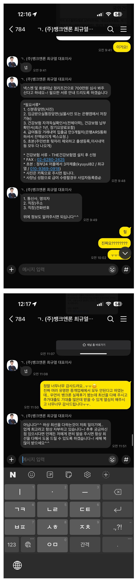

[개인회생자대출] 대출후기 회생 후 기대출 2740만원에서 추가대출 700만원 받은 후기 최규열대표님 감사합니다.

36회차중 34회차 미납 2회 있었고,
기대출 태x 1300만원 (최근) 넥스x 460만원 (가전담보) 엔씨 980만원
재직 2개월 월330만원 사대가입O
재직상태도 3개월이 지나지 않았고 미납2회에 기대출 3건 2740만원이라 못받을거라고 생각을 하고 있었습니다. 네이버에 여러 중개업 연락을 했고 누구나 한번쯤 보고 알만한 곳이 다들 똑같이 안된다. 면책이후에 연락달라. 받아주는곳 없다. 이런 말들 뿐.. 이였는데뭐 포기 직전이였다가 우연히 뱅크앤론 실제후기 보고 연락을 혹시나 하고ㅜㅜㅜㅜㅜ 상담하고서 700 가능하다고 하시면서 넥스x 가전담보 정리와 미납2회 정리 조건 이였고 진짜 뭐라고 감사 표시를 해야 될지 모르겠습니다. 진짜 뭐라고 감사 표시를 해야 될지 모르겠습니다. 다시한번 최규열대표님 감사합니다. 너무너무 감사드리고 새해 복 많이 받으세요???
https://cafe.naver.com/cityman88/309841